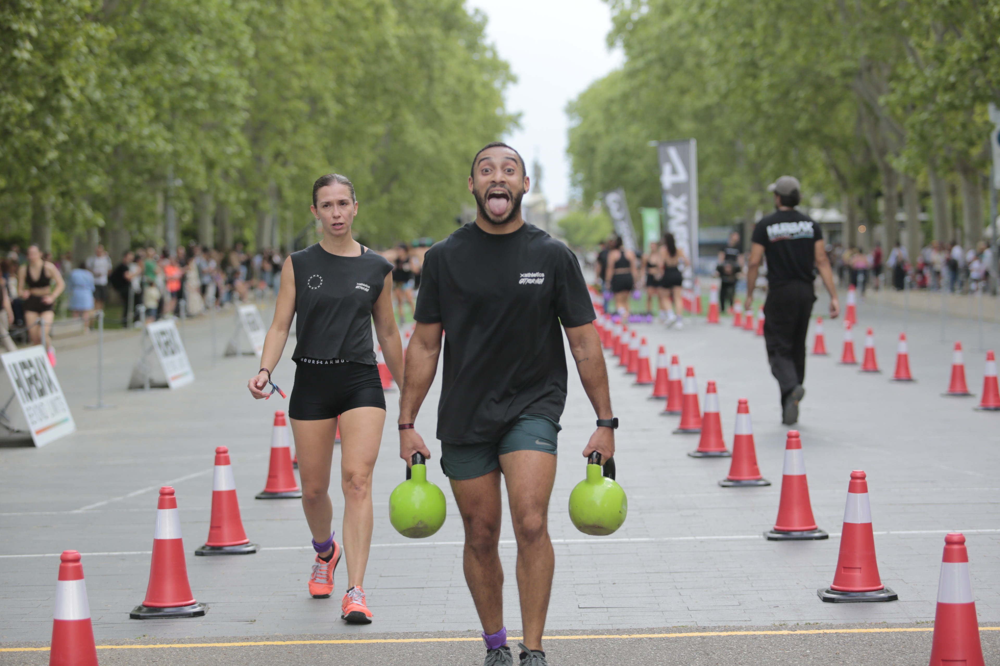
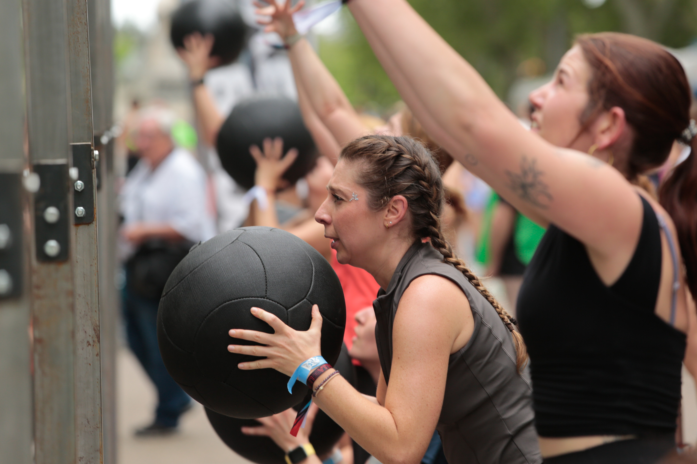

Hurbax brought its 2026 national circuit to Valladolid on Saturday 25 April, staging its hybrid running-and-functional-fitness race at Acera de Recoletos, with event coverage by the Image Media team. The event was organised by Club Deportivo Básico Hurbax, directed by Mario Reis Nava.
The format combines running with functional workout stations along a one-kilometre urban circuit, alternating rowing, wall balls, sandbag lunges, farmer's carry and burpee broad jumps over a total distance of roughly 5 kilometres. Athletes competed in individual, pairs and team categories, with the individual men's race starting at 14:00.

Ahead of the event, organisers reported 632 registered participants, with capacity for up to around 1,000. More than 60% of entrants were women, which the organisers and Valladolid's city council highlighted as making it the only mixed outdoor sporting event in Spain with that level of female participation.

The event doubled as a commemoration of the 475th anniversary of the Valladolid Controversy, the 16th-century debate held in the city that is widely regarded as an early precedent for human rights discourse. The programme, supported by Valladolid City Council's Participation and Sports department, included talks on women in sport, volunteer initiatives and live entertainment alongside the race.
The Image Media coverage team comprised Luis Moreira, Thainá Duete, Mateus Pereira and Johnny.